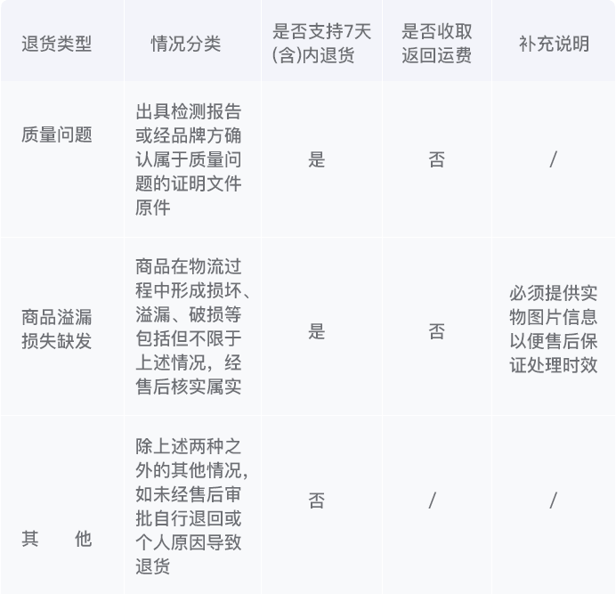

男人帮海淘秉承着“正直、责任、有态度”的优良传统，为广大客户提供最优质的商品及服务。平台所展示商品均采自品牌官网，保证正品。但由于海外商品物流周期长、路途遥远、监管政策严苛等原因，在跨境运输、 转关、清关、国内派送等过程中部分商品难免会出现瑕疵。对此，我们尽力避免，同时提供完善的售后保证措施，保障您在购物过程中的权益。
用户确认，用户与男人帮达成的协议为代购协议，用户不是直接从男人帮处购买国外商品，男人帮仅为用户提供海淘商品筛选和海淘商品代买服务，用户与男人帮产生的服务约定为代理中介约定，由于用户与男人帮达成的服务协议中，用户仅支付了商品代购运费，而未涉及或有的商品退货服务运费，若发生退货情况，男人帮承诺于于户商品供货商进行联系，并免费提供退货代办服务，但退货代办过程中发生的邮费、包装费等其他相关费用由用户承担。
1、7天(含)内，商品出现问题，请您联系客服，客服MM将与您核实，若审批通过，自通过之日起14天内男人帮售后团队未收到您的商品，您的申请单将自动转为审核不通过而关闭。未申请售后或审核不通过擅自寄回商品的，男人帮有权向用户收取仓储综合费用。 2、请您将问题商品寄回男人帮售后(不接受到付，请您支付运费)，售后人员核实，若符合男人帮海淘退货及品牌官方的退货政策，将联系品牌官方协调退货事宜；若商品不符合退货政策，将退还商品给您，您将承担退还运费。 3、若品牌官方同意退货，则将商品寄回品牌官方的海外售后中心，并等待退款。若品牌官方不同意退货，将退还商品给您，您将承担退还运费。 4、男人帮不承担往来运费，将由您自行承担。 5、由于须等待品牌官方同意退货申请、寄回商品、品牌官方安排退款，流程较多，因此时间会久一些，请您耐心等待，预计20-30个工作日。
仅支持下单时支付方式退款
请联系客服咨询详情
自顾客收到商品之日起7天(含)内可退货，客户在线申请退货，并确保： 1、商品外包装完整，相关附（配）件齐全； 2、商品表面无划痕、无磨（破）损、无磕碰、无使用、无拆卸等痕迹； 3、防伪标识、标签或其他防伪措施未刮开、撕损、修改及改动（若有），唯一性三包卡不能缺失或撕损（若有）； 4、赠品不得遗失破损。 “外包装”是指：生产厂商原包装。 具体退货标准如下：  注： 1、判断实际收货日期规则：以客户实际签收日期为准； 2、下单时使用的优惠券不予退还； 3、因政策及海外购原因，男人帮海淘仅提供退货服务。即确认收货后，明确非客户责任的前提下，客户可以提交退货申请。非客户责任一般是指非因客户原因导致的诸如：物流环节造成的破损溢漏、商品本身质量问题、仓库错发缺发、与前台页面信息描述完全不符等情形。 4、对组合出售的商品，仅对满足上述退货标准的单件或多件商品提供退货服务，不扩展至组合全部商品。
1、任何非男人帮出售的商品不予退货；含防伪码商品，防伪码涂层一经刮开或涂改不予退货；含防伪标签商品，防伪标签一经撕损或改动不予退货； 3C数码类产品序列号与出库商品不一致不予退货；以及其他无法判断是否由男人帮售出的商品不予退货； 2、商品页面明确告知属临保商品的不予退货； 3、因客户擅自改动商品导致的质量问题不予退货； 4、附件、保修卡等缺失或无法与主品匹配的商品不予退货； 5、商品图片及信息仅供参考，因拍摄灯光及不同手机屏幕色差等问题可能造成实物与网页宣传图片存在色差，不属于质量问题，不予退货； 6、由于顾客个人能力或使用环境与商品属性存在差异而产生的顾客误报退货原因，不予退货； 7、其他依据法律或本规则细则规定不支持退货的商品不予退货。
处理流程：属于质量问题的，请将权威机构检测报告、附件、说明书、包装、赠品(如有)以及商品一并寄回办理退货手续。 注意事项： 1、钟表、珠宝、首饰等包含贵重金属商品属于特殊商品，一经售出，非因质量问题不予退货； 2、有明显使用痕迹、商品污损污染等情形的不予退货； 5、商品图片及信息仅供参考，因拍摄灯光及不同手机屏幕色差等问题可能造成实物与网页宣传图片存在色差，不属于质量问题，不予退货； 3、配件、赠品缺失不予退货； 4、开箱即损标识破裂的不予退货。
处理流程：属于质量问题的，请将附件、说明书、包装、赠品(如有)以及商品一并寄回办理退货手续。 注意事项：细小划痕、线头、胶水痕迹等不影响商品质量、性能、用途的瑕疵不属于质量问题。 所有质量问题退货申请(质检报告,若有)需上传至少3张不同角度的图片
男人帮可能随时修改本《退货政策》的条款，该等修改构成本《退货政策》的一部分，如您不同意修改的有权停止使用，如继续使用的视为同意修改。